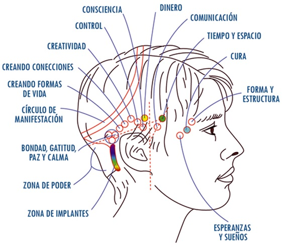
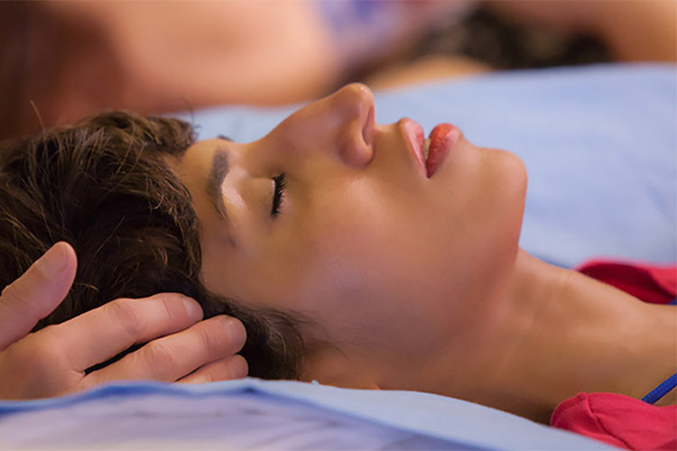

Barras de Acces
Las barras de Access son 32 puntos en tu cabeza que, cuando los tocas gentilmente, liberan, sin esfuerzo y con facilidad, los pensamientos, las ideas, las creencias, las emociones, y las consideraciones que te impiden crear una vida que amas
Se usan como una herramienta potente y pragmática por las familias, los practicantes en el área del bienestar, las escuelas, los negocios, los profesionales de la salud mental, los atletas, las prisiones, los veteranos, los artistas y muchos más.
Esta técnica ofrece una sensación de calma y claridad mental desde la primer sesion, pero en general se recomiendan unas 8 sesiones para hacer el desbloqueo, aun asi, la mayoría que lo practica va por más.

Los efectos de las Barras de Access son individuales para cada persona y difieren de sesión en sesión. Sin embargo, además de mejorar la salud física, los receptores han reportado una mayor consciencia intuitiva, más gratitud, amabilidad, paz y calma.Column
